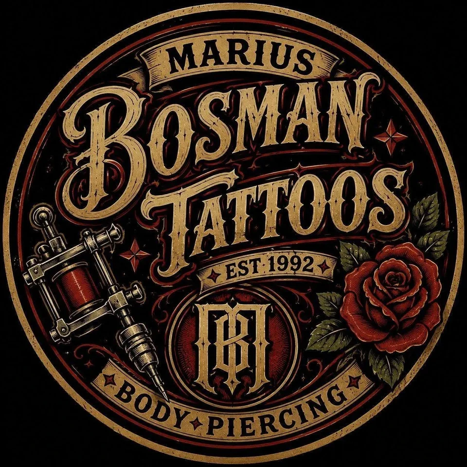
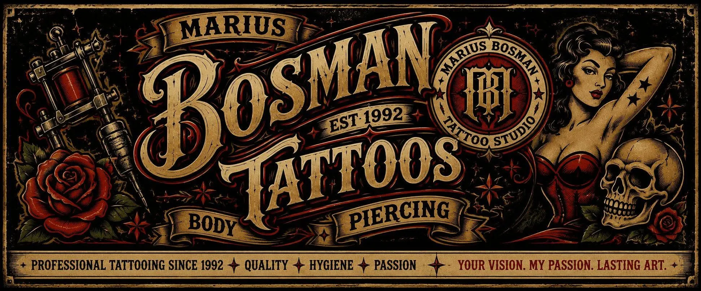

Walls of Flash
Walls covered in traditional tattoo flash. Pick a classic straight off the wall, or bring me your own idea.

Old-school tattooing · Brackenfell · Since 1992
The Studio
My studio is an old-school destination tattoo studio in Brackenfell, Cape Town, inspired by the late-'80s and early-'90s shops that shaped my career. It's a place for tattoo lovers and collectors to come for the tattoo and the experience.

Walls covered in traditional tattoo flash. Pick a classic straight off the wall, or bring me your own idea.
You'll sit in an old barber-style tattoo chair, the way the shops I grew up in did it.
Old machines, signage and collectables, all part of the shop's character.
Over 30 years of experience, plus today's techniques, trends and technology.
Good tattoos. Good people. Always.
Meet the Artist
I'm Marius Bosman, and I've been tattooing since 1992. For more than 30 years tattooing has been my passion, my livelihood and a big part of who I am.
I opened the first tattoo studio in the history of Stellenbosch, and I've had the privilege of watching, and contributing to, the evolution of tattooing in Cape Town and South Africa.
I came up in the shops of the late '80s and early '90s: flash on every wall and bold traditional work. I've kept learning ever since and bring modern techniques, trends and technology to every piece, on an old-school foundation.
This studio is where it all comes together: the atmosphere and character of the shops I grew up around, and everything I've learned in the chair since.
“Your vision. My passion. Lasting art.” Marius Bosman
I picked up the machine and never put it down.
I opened the first tattoo studio in Stellenbosch's history.
Tattooing through the growth of the industry in Cape Town and across South Africa.
My old-school studio at Vredekloof Center, Brackenfell. Book a session →
The Flash Wall
Custom colour, cover ups, fine line and everything in between. Tap any piece to see it up close.
What Happens in the Chair
Bring me an idea, a reference or a story, and I'll draw it up as a design that lasts. Art with meaning.
Got a tattoo you've fallen out of love with? I'll work with you on a design that turns it into something you're proud of.
Classic traditional and old-school designs, ready to go. Pick one off the wall.
Professional piercing, done to the same hygiene standard as every tattoo I do.
Your vision. My passion. Lasting art.
Get in the Chair
Appointments are by WhatsApp only. I handle every booking myself, so send me a message on 071 323 8988 and we'll take it from there. For anything else, you can also email me.
Tell me what you're after, where it's going and roughly how big. Reference pictures help.
Pick something off the flash wall or I'll draw up a custom piece, then we set a date.
Clean, professional and done properly, and I'll give you aftercare advice before you leave.
Let's make something legendary.